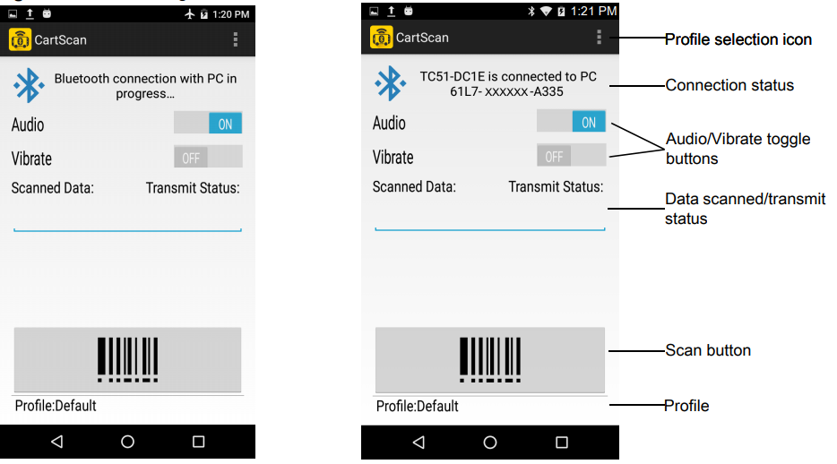
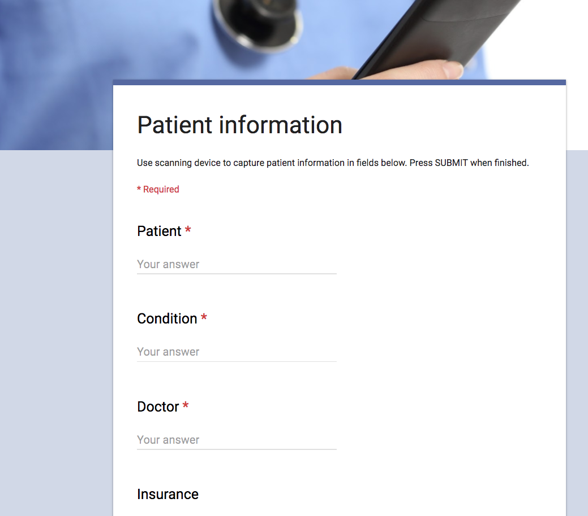
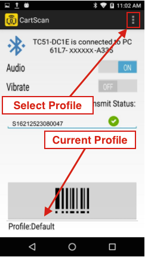
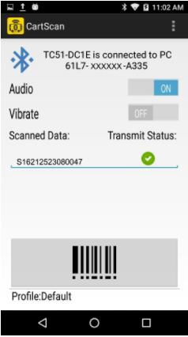
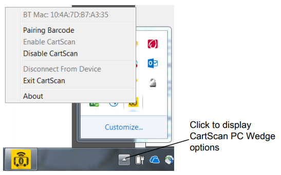
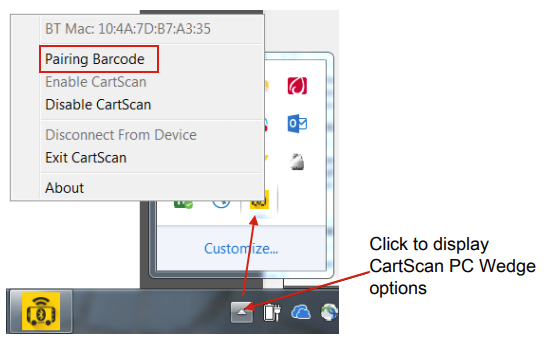

Overview
CartScan uses Bluetooth to turn a supported Zebra mobile device into a wireless barcode scanner, sending collected data as keystrokes to a nearby computer running a line-of-business application. CartScan was initially developed for health care workers, but has applications in warehouse, transportation, logistics and numerous other industries.
Connecting PC to Mobile Device
NOTE: If the mobile device was not previously paired with the PC, see the Setup guide.
To connect the mobile device to target PC:
- On the target PC, launch CartScanPCWedge.
- On the mobile device, launch the CartScan app.
- Using the mobile device, scan the barcode displayed on the CartScanPCWedge screen. Once scanned, the mobile device attempts to establish the connection to the PC.

Connecting screen and instructions on PC
Using CartScan
To use CartScan:
With the mobile device connected to the target PC:
- On the target PC, launch the "line-of-business" app intended to receive the scanned data.
- Place the cursor in the target input field of the LOB app into which scanned data should be deposited:

- On the mobile device, select (or confirm) the Profile being used for scanning:

- Scan the desired barcode(s) using the mobile device:

- Confirm successful transmission of scanned data to the PC by looking for a green check mark under "Transmit Status" as seen above.
- Repeat Steps 4 and 5 until all data is acquired. See Notes.
- Close the CartScan app on the mobile device when scanning is complete.
Usage Notes
- When a barcode is successfully decoded by the mobile device, the scanner beeps and/or vibrates (if enabled).
- A beep does not reflect successful transmission of the scanned data to the PC.
- Periodically confirm that scanned data is delivered properly to the target application.
- Data will not populate into the intended input field if:
- The PC cursor moves out of the target app or intended field
- Another application appeared in the foreground
- The device lost its connection to the PC
- Windows or a screen saver caused the PC to lock
- A red "X" appears under "Transmit Status" if a barcode is scanned without an active connection to the PC (below, right).
- A "<DeviceName> is disconnected from the PC" message appears if the mobile device goes out of range of the PC or loses connection due to a timeout or other reason. See reconnecting the device.
 Disconnect messages might not appear immediately
Disconnect messages might not appear immediately
Close the CartScan application on the mobile device when workflow scanning is complete.
Using CartScanPCWedge
When CartScanPCWedge launches, the UI screen displays the Bluetooth connection barcode, the status of the connection and instructions to pair and connect a mobile device with the PC. When minimized, the CartScanPCWedge app continues to run in the background, and quits only after "Exit CartScan" is selected from its system tray icon. To restore the UI or change its settings, click the CartScan icon from the system tray.

CartScan PC Wedge System Tray
CartScanPC Wedge functions:
BT Mac: Displays the Bluetooth MAC address of the PC.
Pairing Barcode - displays the barcode and instructions for connecting (or reconnecting) the PC with a device.
Enable CartScan - activates the CartScan service, which monitors the Bluetooth connection for incoming scanner data.
Disable CartScan - Stops the CartScan service and disconnects the PC from the currently connected mobile device. When disabled, the CartScan icon turns red.
Disconnect From Device - severs the connection between the PC and the currently connected device. Use this feature to take one device out of service and connect with another.
Exit CartScan - Quits CartScanPCWedge and the CartScan service, and disconnects the PC from the currently connected mobile device. Select this option when scanning is no longer required on the PC. To re-launch, double-click the CartScanPCWedge icon (or CartScanPCwedge.exe) from the desktop or Start menu.
About - Displays CartScanPCWedge version information.
Reconnecting the Device
To re-establish the Bluetooth connection:
- On the PC, click the CartScanPCWedge icon in the system tray.
If CartScanPCWedge is not already running, launch it from the desktop or Start menu.  - Select "Pairing Barcode" to display the barcode and pairing instructions.
- Follow the instructions in the "Pairing Barcode" window.
End-User Best Practices
Users of Zebra CartScan and CartScanPCWedge applications should have proper training, reference materials and usage guidelines to understand how CartScan works and how to use it. Below is a list of suggested end user best practices.
- Always check the status of the connection before scanning ("...connected to PC...".
- Always confirm that data was transmitted after scanning (green checkmark).
- Periodically confirm correct placement of scanned data into the target fields.
- Do not allow other users to interact with the PC or scanning device while workflow scanning is in progress.
- Close the CartScan app on the mobile device when scanning is complete.
Troubleshooting
No Data Appears on PC
Possible cause
- Cursor is in the wrong field on PC
Solution
Ensure that the target PC application is in the foreground and the cursor is placed in the target field.
Possible cause
- BT Output is Disabled
Solution
Have an IT administrator check the Profile Settings to ensure that "Enable/disable BT Output" is enabled.
Possible cause
- The mobile device is out of range, has timed out or otherwise lost connection to the PC.
Solution
See Lost Connection.
Lost Connection
Possible causes
- CartScan session has timed out
- Device or PC has moved out of Bluetooth range (about 25 feet)
- RF interference is blocking the Bluetooth signal
- Another user disconnected CartScan from the target PC
Solution
Rescan the pairing barcode as explained in Reconnecting the Device section.
Unable to Scan Barcode
Possible causes
- Unrecognized or invalid barcode symbology
Solution
Check for damage or obstructions to the barcode or its label.
- Defective scanner
Solution
Have an IT administrator check the device.
Unexpected Characters in Data
Possible cause
- A prefix or suffix was added through Advanced Data Formatting in the selected Profile.
Solution
Have an IT administrator check the Profile Settings.